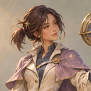
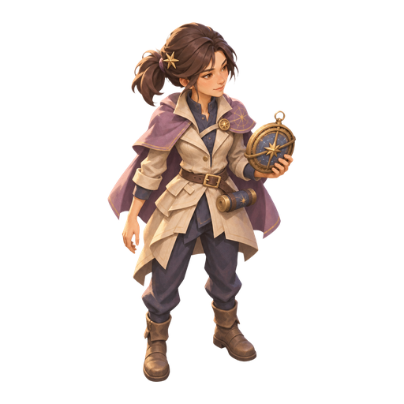
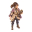
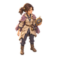
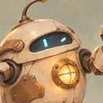
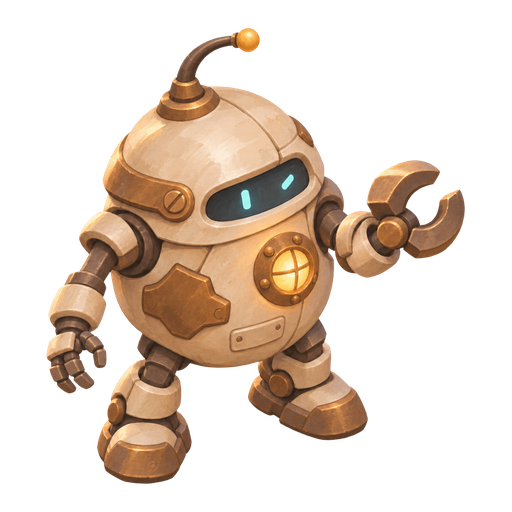
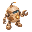
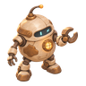

霁月 · 星图师
同源裁切头像 / 俯视静态首帧

64px 实际尺寸
96px 实际尺寸灰度检查


侧束发、浅色外套和偏置圆形星盘保留；小尺寸以轮廓为主，面部细节不会与立绘等量呈现。
头像直接来自已认可的原图；战斗造型以对应原图为参考单独生成。透明 PNG 已清理并输出多种尺寸。
查看已替换美术的角色选择页 ↗


64px 实际尺寸
96px 实际尺寸侧束发、浅色外套和偏置圆形星盘保留；小尺寸以轮廓为主，面部细节不会与立绘等量呈现。



64px 实际尺寸
96px 实际尺寸保持圆润低重心、表情窗和暖色胸灯；简化纹理，使其与人形角色在灰度下也容易区分。